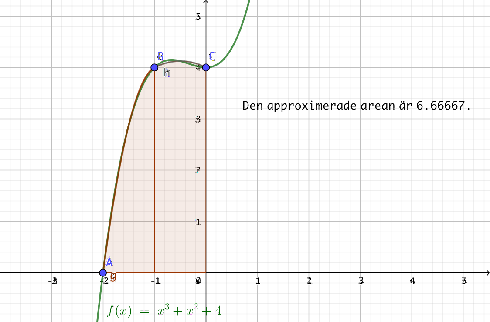
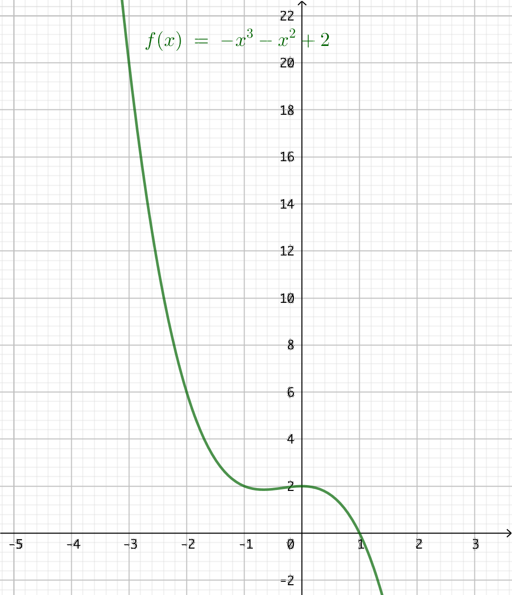
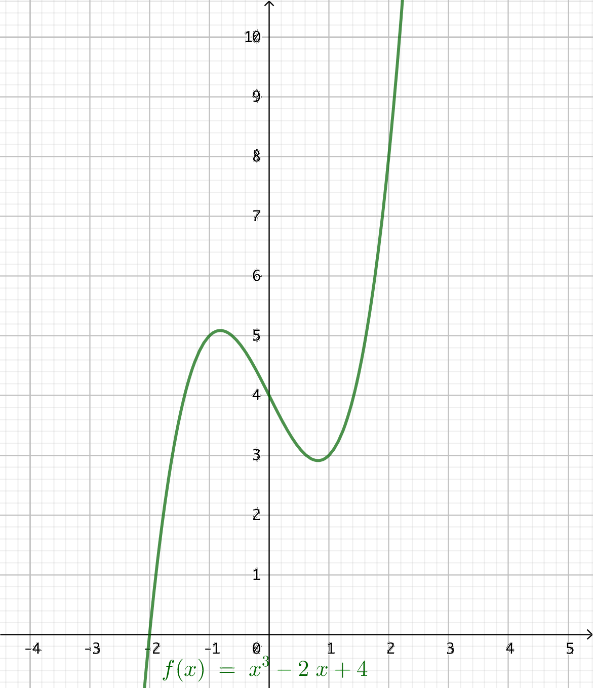
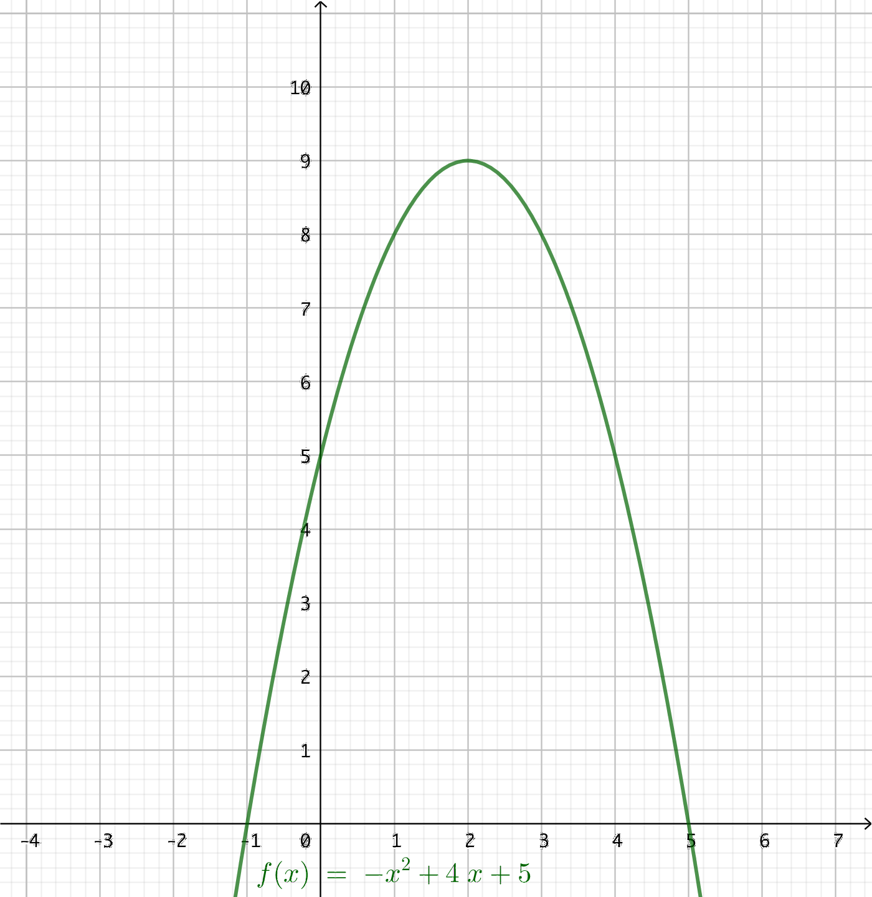
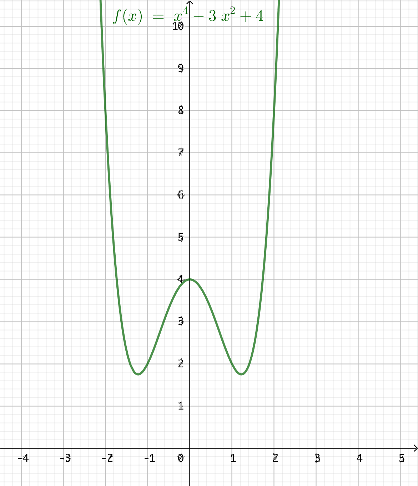
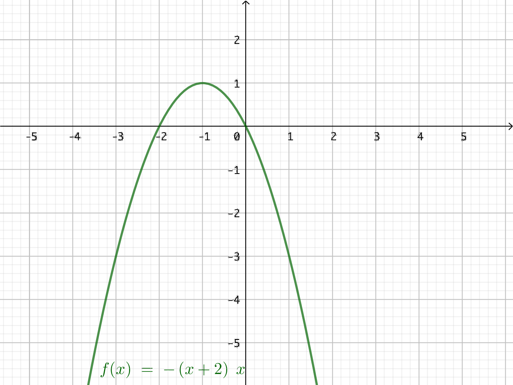

7. Newton-Cotes metoder för integrering
Vi bestämmer arean mellan funktionen \( f(x) = x^3 + x^2 +4\) och \(x\)-axeln i intervallet -2 till 1 utan att integrera.
Vi använder oss av tre numeriska metoder, rektangelformeln, trapetsformeln och Simpson formel. Gemensamt för alla tre är att vi delar in arean i mindre delar.
För att kunna jämföra de numeriska metoderna med det exakta värdet så bestämmer vi det, \[ \displaystyle\int_{-2}^0 x^3+x^2+4 \text{ d}x = 11\dfrac{1}{4}. \]
Vi börjar med rektangelformeln.
Rektangelformeln
Tanken är att vi bildar rektanglar där höjde bestäms från mittpunkten av intervallet. Det studerar vi med hjälp av GeoGebra.
Vi märker att vi kommer närmare det exakta värdet destu mera intervall som vi delar in arean i. Desstuom påverkas arean av hur vi bildar arean för rektanglarna. Beaktar vi intervallets vänstra eller högra del, mittpunkten eller någon annan punkt i intervallet.
Traptesformeln
Här bildar vi trapeter. Fördelen är att trapetsernas area är beroende av två längder. Vi studerar arean med hjälp av GeoGebra.
Vi märker att med Trapetsformeln kommer vi med färre antal intervall snabbare närmare det exakta värdet än med rektangelmetoden.
Simpsons formel
Med Sipsons formel utnyttjar vi intervall där vi approximerar en parabel för varje arean. Med två intervall får vi följande situation.

Eftersom vi har något som dynamiskt följer den ursprungliga funktionens värden så kommer vi att komma närmast sanningen med Simpsons metod.
När vi numeriskt bestämmer \( \displaystyle\int_a^b f(x) \textrm{ d} x \) får vi följande:
- Rektangelformeln: Vi bildar rektanglar som alla är lika breda. Höjden för rektangeln får vi tex genom att ta mittpunkten av intervallet.
- Trapetsformeln: \( \approx h (\dfrac{1}{2}f(x_0) + f(x_1) + \ldots + f(x_{n-1}) + \dfrac{1}{2}f(x_n)) \) där \( x_0 = a \), \( x_n = b\) och \( h\) är intervallets bredd.
- Simpsons formel: \( \approx \dfrac{1}{3} \cdot h (f(x_0) + 4f(x_1) + 2f(x_2) + 4f(x_3) \ldots + 4f(x_{n-1}) + \dfrac{1}{2}f(x_n)) \) där \( x_0 = a \), \( x_n = b\), \( n \) är ett jämt tal och \( h \) är intervallets bredd.
Märk att koefficienterna framför termerna är \( 1, 4, 2, 4, 2, \ldots 4, 1 \).
Exempel 1 Bestäm storleken av arean som bildas mellan \( f(x) = -x^3 -x^2 + 2 \) och \( x \)-axeln i intervallet \( [-3,1] \) då vi delar upp intervallet i 4 st delar.
Lösning
Vi bestämmer arean på följande sätt:
- Exakt: \( A = \displaystyle\int_{-3}^1 -x^3-x^2+2 \textrm{ d}x = \dfrac{56}{3} = 18,66\).
- Rektangelmetoden: Bredden på intervallet är 1. Vi får \(A = 1 (f(-1,5) + f(-0,5) + f(0,5) + f(1,5)) = 18 \)
- Trapetsmetoden: Vi får \( A = 1 (\dfrac{1}{2}f(-3)+f(-2)+f(-1)+ f(0) + \dfrac{1}{2}f(1)) = 20 \)
- Simpsons formel: Vi får \( A = \dfrac{1}{3} \cdot 1 (f(-3) + 4f(-2) + 2f(-1) + 4f(0) + f(1)) = \dfrac{56}{3} = 18,66 \).
Grafen ser ut som följande:

I detta fall ger Simpsons metod det bästa värdet.
Uppgifter
- Bestäm arean som bildas mellan \( f(x) = x^3 -2x +4 \) och \(x\)-axeln i intervallet \(-2\) och \(2 \). Använd dig av 4 intervall.
- Med rektangelmetoden
Bredden på intervallet är 1. Vi får \(A = 1 (f(-1,5) + f(-0,5) + f(0,5) + f(1,5)) = 16 \).
- Med trapetsmetoden
Vi får \( A = 1 (\dfrac{1}{2}f(-2)+f(-1)+f(0)+ f(1) + \dfrac{1}{2}f(2)) = 16 \).
- Med Simpsons metod
Vi får \( A = \dfrac{1}{3} \cdot 1 (f(-2) + 4f(-1) + 2f(0) + 4f(1) + f(2)) = 16 \).
- Exakt på räknare eller för hand
Vi får \( A = \displaystyle\int_{-2}^2 x^3-2x+4 \mathrm{ d}x = 16 \).
- Varför ger alla metoder samma värde som det exakta värdet?
Grafen ser ut som följande:

Vi har en tredje grads funktion. Alla tre metoder ger ett mycket bra värde.
- Med rektangelmetoden
- Bestäm arean som bildas mellan \( f(x) = -x^2 + 4x + 5 \) och \(x\)-axeln. Använd dig av intervallbredden 1.
- Med rektangelmetoden
Bredden på intervallet är 1. Vi har 6 st intervall. Skärningspunkterna är \(-1\) och \(5\). Bestäm dessa!
Vi får \(A = 1 (f(-0,5) + f(0,5) + f(1,5) + f(2,5) + f(3,5) + f(4,5)) = 36,5 \).
- Med trapetsmetoden
Vi får \( A = 1 (\dfrac{1}{2}f(-1)+f(0)+f(1)+f(2)+f(3)+f(4)+\dfrac{1}{2}f(5)) = 35 \).
- Med Simpsons metod
Vi får \( A = \dfrac{1}{3} \cdot 1 ( f(-1) + 4f(0) + 2f(1) + 4f(2) + 2f(3) + 4f(4) + f(5) ) = 36 \).
- Exakt på räknare eller för hand
Vi får \( A = \displaystyle\int_{-1}^5 -x^2+4x+5 \mathrm{ d}x = 36 \).
- Varför ger Simpsons metod det värde som är närmast exaktvärde?
Grafen ser ut som följande:

Vi har en funktion som är en parabel. Då ger en approximation av parabler bästa värde.
Därför ger Simpsons metod närmast värde.
- Med rektangelmetoden
- Bestäm arean som bildas mellan \( f(x) = x^4 -3x^2 + 4 \) och \(x\)-axeln i intervallet \( [-2,2] \). Använd dig av 4 intervall.
- Med rektangelmetoden
Bredden på intervallet är 1. Vi har 4 st intervall.
Vi får \(A = 1 (f(-1,5) + f(-0,5) + f(0,5) + f(1,5)) = \dfrac{45}{4} = 11,25 \).
- Med trapetsmetoden
Vi får \( A = 1 (\dfrac{1}{2}f(-2)+f(-1)+f(0)+f(1)+\dfrac{1}{2}f(2)) = 16 \).
- Med Simpsons metod
Vi får \( A = \dfrac{1}{3} \cdot 1 ( f(-1) + 4f(0) + 2f(1) + 4f(2) + 2f(3) + 4f(4) + f(5) ) = \dfrac{40}{3} = 13,33 \).
- Exakt på räknare eller för hand
Vi får \( A = \displaystyle\int_{-2}^2 x^4-3x^2+4 \mathrm{ d}x = \dfrac{64}{5} = 12,8 \).
- Vilken metod ger närmaste värde och varför?
Grafen ser ut som följande:

Vi har en funktion som är av fjärde grad. När vi approximerar med parablar får vi något som är ganska nära. För att komma riktigt nära behöver vi flera intervall.
Därför ger Simpsons metod närmast värde.
- Med rektangelmetoden
- Bestäm arean som bildas mellan \( f(x) = -x^2 - 2x \) och \(x\)-axeln. Använd dig av 4 intervall.
- Med rektangelmetoden
Skärningspunkterna är \(-2\) och \(0 \). Bestäm dessa! Vi har 4 st intervall, bredden på ett intervall är 0,5.
Vi får \(A = 0,5 (f(-1,75) + f(-1,25) + f(-0,75) + f(-0,25)) = \dfrac{11}{8} = 1,375 \).
- Med trapetsmetoden
Vi får \( A = 0,5 (\dfrac{1}{2}f(-2)+f(-1,5)+f(-1)+f(-0,5)+\dfrac{1}{2}f(0)) = \dfrac{5}{4} = 1,25 \).
- Med Simpsons metod
Vi får \( A = \dfrac{1}{3} \cdot \dfrac{1}{2} ( f(-2) + 4f(-1,5) + 2f(-1) + 4f(-0,5) + f(0) ) = \dfrac{4}{3} = 1,33 \).
- Exakt på räknare eller för hand
Vi får \( A = \displaystyle\int_{-2}^0 -x^2-2x \mathrm{ d}x = \dfrac{4}{3} \).
- Vilken metod ger närmaste värde och varför?
Grafen ser ut som följande:

Vi har en funktion som är en parabel. Då ger en approximation av parabler bästa värde.
Därför ger Simpsons metod närmast värde.
- Med rektangelmetoden
- En del av kursen är att lära sig programmera. Gå till tie.koodariksi.fi, registrera dig och börja jobba på Ohjelmoinnin alkeet. Uppe till höger kan du byta språk.
Jobba ca en timme med materialet, eller med tillägsmaterialet.